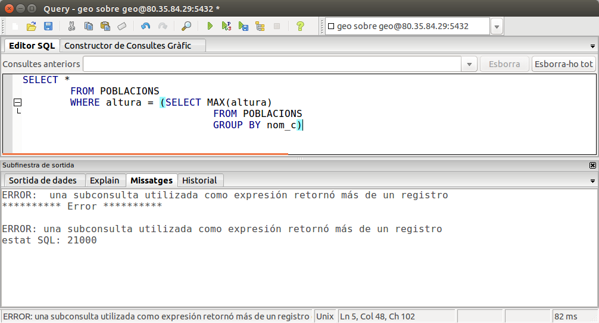

3. Subconsultas
Una subconsulta es una consulta dentro de otra consulta. Esta subconsulta puede tener todos los elementos que hemos visto hasta ahora.
El lugar donde poner una subconsulta dentro de la consulta principal puede estar en la cláusual WHERE o en la cláusula HAVING (formando parte de una condición) o en el FROM, y debe ir entre paréntesis. Incluso se puede poner en lo mismo SELECT, es decir, en las columnas que van después del SELECT.
-
Si va en el FROM , la subconsulta será el origen de los datos, y por tanto se ejecutará antes y proporcionará los datos para la consulta principal.
-
Si va en el WHERE o el HAVING formará parte de una condición, y así podremos comparar en la consulta principal un campo con el que devuelva la subconsulta, por ejemplo. Aparte de las comparaciones normales que ya hemos visto en el WHERE o el HAVING, podremos poner algunos operadores y predicados especiales, como veremos más adelante.
-
Si va en el mismo SELECT normalmente será para sacar un resultado global que no afecta al resto de la consulta
3.1 Sintaxis en el FROM
SELECT ...
FROM ( _Subconsulta_) AS _Nombre_Subconsulta_
Vamos a poner un ejemplo para entenderlo. Queremos sacar la media de pueblos por comarca. Lo podemos hacer de la siguiente manera: primero contamos cuántos pueblos hay en cada comarca, y una vez calculado esto sacamos la media.
SELECT AVG(cuántos)
FROM (SELECT COUNT(*) AS cuántos
FROM POBLACIONES
GROUP BY nombre_c) AS S ;
Observe que es necesario ponerle un alias en la columna de la subconsulta (cuántos) para poder hacer referencia a ella en la consulta principal. Y por una por otro lado, en PostgreSQL las subconsultas que van al FROM deben tener obligatoriamente un sobrenombre. Si no pusimos AS S (o cualquier otro nombre) nos daría error.
Como ven, ya tiene un nivel de complejidad más que aceptable. Siempre se ejecuta primero la subconsulta y con los datos que proporciona, se ejecuta la consulta principal. Por el grado de complejidad es muy recomendable ir de dentro hacia fuera, es decir, pensar bien la subconsulta, incluso ejecutarla para ver si saca lo que necesitamos (en el ejemplo ver si saca el número de poblaciones de cada una de las 34 comarcas), y cuando estemos seguros de que funciona bien crear la consulta principal.
3.2 Sintaxis en el WHERE o el HAVING
SELECT ...
FROM Tabla
WHERE campo operador ( _Subconsulta_)
Podemos observar que lo que haremos será comparar algún campo de la mesa (o una expresión con alguna función) con el resultado que viene de la subconsulta.
Antes de ver qué podemos poner como operador o como campo o incluso ver unos predicados que podremos utilizar, pondremos un ejemplo, para clarificar las cosas. Intentaremos sacar las comarcas con una altura superior a la media. Calcular la media de las alturas es fácil, siendo la subconsulta. Lo que haremos será comparar la altura de cada población con esta media.
SELECT *
FROM POBLACIONES
WHERE altura > (SELECT AVG(altura)
FROM POBLACIONES)
Si ejecuta la consulta, verá que la altura de todos los pueblos es superior a 300,44 que es la altura media (aproximadamente, porque lo calcula con mucha precisión)
No hay ningún problema en poner dos veces la misma mesa. Los campos se refieren a la mesa más cercana. Y funciona perfectamente para que la subconsulta nos devuelve un único valor, la media de alturas, y en la consulta principal se compara cada altura con ese valor. Posteriormente veremos cómo solucionar el problema de que la subconsulta devuelva más de un valor.
Operadores de comparación y predicados AÑO, AJO, SOME
Es como el ejemplo de arriba, pero con cualquier operador de comparación. Se compara el campo (o expresión) con el resultado de la subconsulta. Si la subconsulta sólo devuelve un valor, no hay más problema, pero si devuelve más de un valor (más de una fila) de momento sería incorrecto (no se puede comparar un campo con varios valores). Pongamos otro ejemplo que ilustrar. Sacar a la población más alta podría hacerse de esta manera.
SELECT *
FROM POBLACIONES
WHERE altura = (SELECT MAX(altura)
FROM POBLACIONES)
No hay problema porque la subconsulta devuelve un valor. Pero vamos a complicarla vamos a ver a las poblaciones más altas de cada comarca. Podríamos intentarlo de esta manera:
SELECT *
FROM POBLACIONES
WHERE altura = (SELECT MAX(altura)
FROM POBLACIONES
GROUP BY nombre_c)
Pero nos daría el siguiente error:

Y es que la subconsulta devuelve 34 valores (uno por cada comarca), y de ésta modo no se puede comparar el valor de la izquierda del igual con los 34 valores de la derecha. Para solucionar el problema de cuándo vuelve más de un valor podemos utilizar los predicados ALL, AÑO, SOME.
- Si utilizamos ALL, el resultado será cierto si la comparación es cierta con TODOS los valores que devuelve la subconsulta.
- Si utilizamos AÑO o SOME (que son sinónimos) el resultado será cierto si la comparación es cierta con ALGUN valor de la subconsulta.
En nuestro ejemplo, seguramente nos convendría AÑO.
SELECT *
FROM POBLACIONES
WHERE altura = AÑO (SELECT MAX(altura)
FROM POBLACIONES
GROUP BY nombre_c)
Esta consulta no funcionará bien del todo, ya que seleccionará todas las poblaciones que coinciden con alguna de las alturas máximas, sean de la su comarca o no. Así por ejemplo, la altura máxima de la comarca de la Plana Alta es la Serratella, con 781 metros, que efectivamente aparece en el listado. Pero también aparece 'Castellón', que tiene una altura de 30 metros. Y aparece porque la altura máxima de la comarca Ribera Baixa da la casualidad de que es 30 metros (Almussafes). Ya dependeremos de hacer bien esta consulta en los ejemplos posteriores, pero para comparar con muchos valores nos va bien.
El operador IN
No será problema que la subconsulta devuelva un valor o muchos. La condición será cierta si el valor del campo (o de la expresión) está entre la lista de valores que devuelve la subconsulta. También pueden utilizar NOT IN, y la condición será cierta cuando el valor del campo no está entre la lista. Por ejemplo, otra forma de sacar a las poblaciones que no tienen instituto, que la vista en las combinaciones externas. En la subconsulta sacamos los códigos de municipio de la mesa INSTITUTOS, y por tanto son los pueblos que tienen instituto, y en la consulta principal queremos los que no están en esta lista
SELECT *
FROM POBLACIONES
WHERE cod_m NOT IN (SELECT cod_m
FROM INSTITUTOS)
El operador EXISTS
Es seguramente lo más incómodo. No se compara un campo (o expresión) con la subconsulta, sino únicamente se pone [NOT] EXISTS (subconsulta) . La condición será cierta si la subconsulta devuelve alguna fila , y no será cierta si no devuelve ninguna fila. Intentamos hacer el mismo ejemplo de antes, el de los pueblos sin instituto. Debemos conseguir que la subconsulta no tenga ninguna fila en el caso de quienes no tienen instituto. De palabra podemos decirlo así: queremos los pueblos para los que no existe ninguna fila en INSTITUTOS con el mismo código de municipio. Ahora ya se puede intuir por dónde van los tiros:
SELECT *
FROM POBLACIONES
WHERE NOT EXISTS (SELECT *
FROM INSTITUTOS
WHERE cod_m= POBLACIONES.cod_m)
mira como si en la subconsulta ponemos un campo (en el ejemplo cod_m), si el campo es de la tabla (o tablas) de la subconsulta, se referirá a él, por esto si queremos hacer referencia a un campo de la tabla o tablas de la consulta principal debemos poner el nombre de la mesa delante.
3.3 Sintaxis en el SELECT
SELECT ... ( _Subconsulta_)
FROM Tabla
Vamos a poner también un ejemplo para entenderlo. Vamos a calcular la diferencia de la altura de cada población con la media. La media es un resultado global independiente del resto de la consulta, que en este caso es muy sencilla porque debemos tomar información simple de las poblaciones. La subconsulta también es muy sencilla, porque sólo debemos calcular la media de alturas).
SELECT nombre, altura, altura - (SELECT AVG(altura) FROM POBLACIONS)
FROM POBLACIONES
Ejemplos
1) Sacar la altura media de comarca más grande y la más pequeña.
Nos hace falta previamente la altura media de cada comarca, y esto será la subconsulta. No olvidemos poner un alias en el campo de la subconsulta, para poder hacer referencia en la consulta principal. Y no olvidemos tampoco que las subconsultas en el FROM deben tener alias.
SELECT MAX(media),MIN(media)
FROM (SELECT AVG(altura) AS media
FROM POBLACIONES
GROUP BY nombre_c) AS S;
2) Sacar toda la información de las poblaciones que tienen más de 5 institutos.
Podemos pensar en una subconsulta donde estén los códigos de municipio de poblaciones que tienen más de 5 institutos (se consulta en la teja INSTITUTOS agrupando por código_m y contando el número de filas para que sea mayor que 5).
SELECT *
FROM POBLACIONES
WHERE cod_m IN (SELECT cod_m
FROM INSTITUTOS
GROUP BY cod_m
HAVING count(*) > 5)
3) Sacar toda la información de la población más alta y de la más baja.
Nos planteamos 2 subconsultas, la que saca la altura máxima y la que saca la altura mínima (en una única subconsulta nos devolvería valores en 2 columnas, y estaría más complicado). Sencillamente será sacar toda la información de las poblaciones que tienen una altura igual a lo que devuelve una subconsulta oa lo que devuelve la otra.
SELECT *
FROM POBLACIONES
WHERE altura = (SELECT MAX(altura)
FROM POBLACIONES)
ORO altura = (SELECT MIN(altura)
FROM POBLACIONES);
4) Sacar a la población más alta de cada comarca.
La dificultad está en que debe ser la máxima de las alturas de su comarca. Por tanto, en la subconsulta debemos hacer referencia a la comarca en cuestión. Como siempre estamos tratando la mesa POBLACIONES, tanto en la consulta como en la subconsulta, deberemos poner un nombre a la de la consulta principal, para poder hacer referencia a ella desde la subconsulta.
SELECT *
FROM POBLACIONES T1
WHERE altura = (SELECT MAX(altura)
FROM POBLACIONES
WHERE nombre_c= T1.nombre_c);
En el resultado obtenemos 35 poblaciones, cuando sólo existen 34 comarcas. La razón es que en L'Alcoià, hay 2 poblaciones con la altura máxima (816 metros), por tanto el resultado es correcto
5) Obtener el nombre de la comarca y la provincia de las comarcas que tienen una altura media más alta que la media de todas las poblaciones.
La subconsulta será bastante sencilla: la media de alturas de las poblaciones. En la consulta principal deberemos agrupar por cada comarca y calcular la media de alturas de las poblaciones, y compararla con la media que nos viene de la subconsulta. Como pide también la provincia, nos hace falta también la mesa COMARCAS, y por tanto tendremos que reunirlo con POBLACIONES; en esta ocasión lo hemos hecho poniendo la condición en el WHERE.
SELECT COMARCAS.nombre_c, provincia, AVG(altura)
FROM COMARCAS, POBLACIONES
WHERE COMARCAS.nombre_c=POBLACIONES.nombre_c
GROUP BY COMARQUES.nombre_c, provincia
HAVING AVG(altura) > (SELECT AVG(altura)
FROM POBLACIONES)
6) Sacar el nombre de la comarca con la provincia, número de pueblos de cada una y el porcentaje que supone respecto al total de pueblos.
Toda la información la podemos sacar de una reunión entre las tablas COMARCAS y POBLACIONES (para contar cuántos pueblos hay en cada comarca), pero para poder calcular el porcentaje necesitamos el número total de poblaciones, que el podemos calcularlo con una sencilla subconsulta. El sitio más cómodo está en el SELECT. La reunión la hemos realizado en esta ocasión con el USING.
SELECT COMARCAS.nombre_c, provincia, COUNT(cod_m), COUNT (cod_m)*100.0/(SELECT
COUNTO(*) FROM POBLACIONES)
FROM COMARCAS INNER JOIN POBLACIONES USING(nombre_c)
GROUP BY 1,2;
 Ejercicios
Ejercicios
Ex_64 Sacar el número máximo de facturas hechas a un cliente
Ex_65 Sacar el importe que supone la factura más cara y el importe que supone la más barata (sin considerar ni descuentos ni IVA)
Ex_66 Sacar el número de facturas más alto que se ha vendido por vendedor en cada trimestre (no quitaremos quién es el vendedor, que sería aún más complicado). Para poder agrupar por trimestre, nos hará falta la función TO_CHAR(fecha,'Q') , que saca el número de trimestre. El paso previo es calcular el número de facturas de cada vendedor y en cada trimestre. Después, con la información anterior, querremos calcular el máximo de cada trimestre.
Ex_67 Sacar los artículos más caros que la media. Sáquelos ordenados por la categoría, y después por código de artículo.
Ex_68 Modificar lo anterior para sacar los artículos más caros que la promedio de su categoría. Sáquelos ordenados por la categoría
Ex_69 Sacar los pueblos donde tenemos clientes pero no tenemos vendedores. Debe ser mediante subconsultas (en plural). Ordene por código del pueblo.
Ex_70 Sacar los pueblos donde tenemos más vendedores que clientes. Sacar el código del pueblo, nombre y número de vendedores. Ordena por nombre del pueblo.
Ex_71 Sacar el importe de la factura más cara de cada trimestre. La información previa es la factura con la fecha y el importe. A partir de ahí tendremos de calcular el máximo del importe para cada trimestre (no será necesario sacar cuál factura es).
Ex_72 Sacar el nombre del vendedor, el número de facturas que ha vendido y el porcentaje que supone sobre el total. Puede que en el momento de calcular el porcentaje, el número resultante deba convertirse a numérico para que da bien el resultado, ya que al realizar una operación con enteros, el resultado será entero. Entonces deberíamos obligar a que el número tenga decimales (::NUMERIC). Y la función de redondear es ROUND. Ordene por el nombre.
Ex_73 Sacar toda la información (con el importe) de la factura más cara. Debe ser por medio de subconsultas. Vea que seguramente habrá 2 subconsultas. En la más interna calculamos el importe de las facturas. En la otra calculamos el máximo. Y en la consulta principal, buscamos la factura que coincide con ese máximo.
Ex_74 (voluntario) Obtener el vendedor que ha vendido más unidades de cada categoría, sin considerar en la categoría el valor nulo. Esta consulta la podríamos considerar ya como muy avanzada.
Licenciado bajo la Licencia Creative Commons Reconocimiento NoComercial SinObraDerivada 2.5